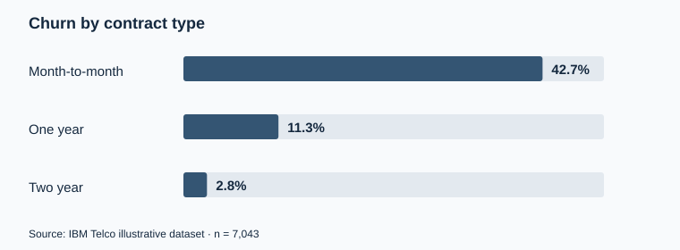

Business intelligence / SQL
Customer Segmentation & Retention
Analyze 7,043 customer records from IBM's public illustrative Telco dataset to identify retention priorities.
Contract-level segmentation

| Contract | Customers | Churn rate | Mean monthly charge |
|---|---|---|---|
| Month-to-month | 3875 | 42.7% | $66.40 |
| One year | 1473 | 11.3% | $65.05 |
| Two year | 1695 | 2.8% | $60.77 |
Business implications
Month-to-month customers show the highest observed churn rate. Test targeted onboarding and retention offers in this segment, measuring incremental retention and margin against a control group.
Descriptive association only; contract type may reflect selection effects. This is an illustrative dataset, not a live company deployment. Results calculated from the CSV; equivalent SQL supplied for reproduction.